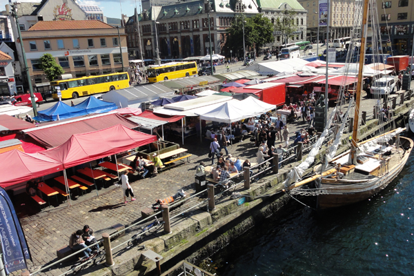

I Bergen by fins det rikelig med muligheter for å nyte kultur, natur, og idrett.
Her er 5 aktiviteter man kan gjøre i Bergen:
- Se Brann Kamp
- Tur på Fløyen
- Bryggen
- Fisketorget
- Konserter på Koengen
Brann Kamp
Bergen sitt største fotballag heter Brann, og de spiller i Eliteserien.
Dersom man ønsker å se på fotball i Bergen, så er Brann kamp et fint alternativ.
Her kan du se et bilde fra Stadion på kampdag:

Tur på Fløyen
Bergen er kjent for sine 7 fjell. Et av disse fjellene heter Fløyen, har en høyde på 320 moh, og er et svært populært sted for både bergenser og turister å gå på tur. Dette skyldes den vakre naturen og flotte utsikten fra toppen.
Bryggen
Bryggen er en av de største turistattraksjonene i Bergen. Bryggen, som ligger i Bergen Sentrum, var en gang brukt som handelsport på 1400 tallet.
Fisketorget
Fisketorget i Bergen sentrum er svært kjent. Her kan man kjøpe fersk fisk og skalldyr, og spise ved vannet midt i Bergen Sentrum.
Konserter på Koengen
Koengen er en park i Bergen der mange store konserter blir arrangert. Blant annet, er det hvor Bergenfest (en stor musikkfestival i Bergen) finner plass. Senest i sommer spilte den populære Kanadieren "The Weeknd" her.